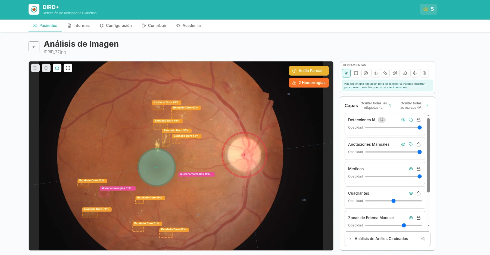
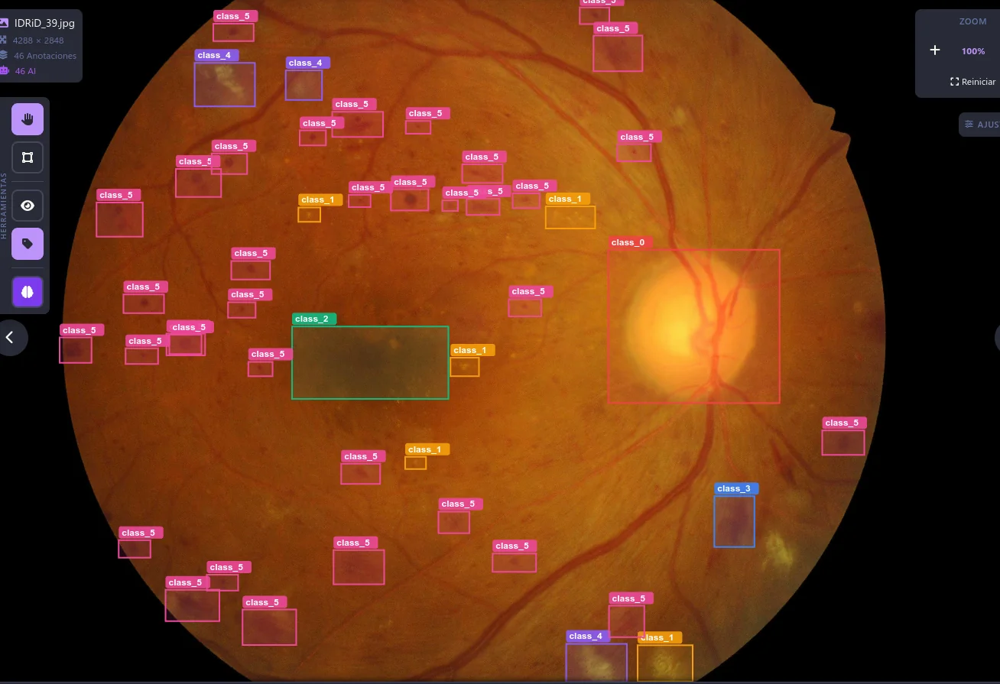
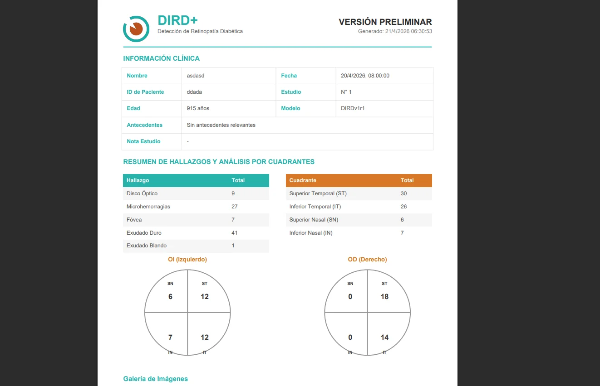
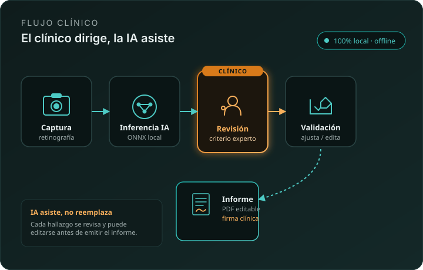

1
What is this?
An application that looks at fundus photographs of your eye and detects signs of damage caused by diabetes. The AI marks the lesions; the clinician reviews and decides.
DIRD+ detects retinal lesions using YOLO ONNX models running locally in the browser or as a Tauri desktop app. No cloud. No per-screening fees. Full privacy for patient data.

Image: hero.webpWhat DIRD+ does, why it matters, and how it's used — in clear language, no jargon.
An application that looks at fundus photographs of your eye and detects signs of damage caused by diabetes. The AI marks the lesions; the clinician reviews and decides.
Diabetes can damage the retina without the patient noticing until vision is already affected. Catching it early prevents the leading cause of preventable blindness in working-age adults.
Healthcare professionals: ophthalmology, optometry, general practice, primary care. The AI assists, it does not diagnose on its own — the clinician validates every finding before the report.
Yes. All analysis runs on the clinician's device. Images are never uploaded to the cloud or to any external server. Zero patient data exposure to the internet.
Externally validated on 3,662 images the model had never seen: correctly detects 97 out of 100 cases with retinopathy and correctly rules out 93 out of 100 healthy eyes.
See validation details →YOLO model trained on fundus images, run locally, with clinical reports generated on-device.
Optic disc, fovea, hemorrhages, hard and soft exudates, microhemorrhages, and edema. 11 classes defined, 7 active.
ONNX model running in the browser via onnxruntime-web or as a Tauri binary. Patient data never leaves the device.
Automatic PDF report generation with findings, metrics, and visualization. Pluggable clinical-guidelines engine.
Inference in seconds per image. Designed for high-volume screening workflows in primary care and telemedicine.
Zero transfer to external servers. Aligns with strict privacy principles and local healthcare regulation.
Tauri desktop (Windows/Linux) + static web build. Same ONNX model in both environments, same experience.
The model marks each lesion with a color according to type (hemorrhage, exudate, microhemorrhage) and severity. The clinician reviews, corrects, and validates before generating the report.

Image: deteccion.webpEditable PDF template with the analyzed image, segmented findings, and severity suggested by the model. The clinician reviews, adjusts as needed, and signs. The AI provides an organized format; diagnostic judgment and the final report always remain with the clinician.

Image: reporte.webpFundus upload, local inference, clinician review, validation of findings, and report generation. All without opening the browser to the internet.

Local inference with YOLOv26s end2end NMS. Boxes and scores generated without sending images to the internet.
Client-side benchmark, PC without GPU, DIRDv2r0 (YOLOv26s end2end NMS, 640×640). 100% local inference in browser / desktop.
dird_modelsONNX models published in the dird_models repository. Open weights, documented, reproducible.
Binary validation on APTOS 2019 (n=3,662, OOD, 5-fold CV). See details below.
PCT_fpr02 (per-class τ calibrated to FPR≤2%). MCC 0.91 stable on 5-fold CV (σ≤0.015). ~9 FPS CPU.
Segmentation (vessels, MA, exudates, hemorrhages, neovascularization) in active development — not yet released.
DIRDv2r0Binary evaluation (normal vs. retinopathy) on public datasets not used for training. No retraining, only operating-point calibration.
Subscribe to the project's releases on GitHub. You'll get an email whenever we publish a new validation, model, or app version.
Limitation: APTOS does not provide lesion-level annotations, so validation is at the per-image binary classification level (no IoU/mAP). Validation on Messidor-2 / EyePACS will confirm generalization to other cohorts.
Desktop executable and static web bundle, updated directly from GitHub Releases.